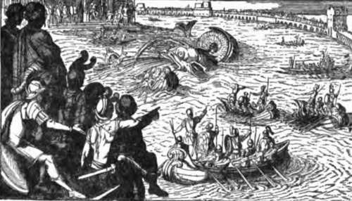

Sea-Fishing From Fixed Positions: Fishing From Sandy Shores. Continued
Description
This section is from the book "Fishing", by Horace G. Hutchinson. Also available from Amazon: Fishing.
Sea-Fishing From Fixed Positions: Fishing From Sandy Shores. Continued
Thus, the setting, or " shooting," as it is generally called, of a long line-variously known as "trot," "spiller," or "bulter"-might conceivably afford sport to some, and it is to the sandy coast that its field of operations is perforce confined. Long lines of nearly a mile in length and carrying many hundreds of hooks are used by the professional fisherman, but such cumbrous tackles are quite inconvenient for any one fishing for pleasure, and a line with fifty hooks should be ample. Such a line may be home made, or such makers as Hearder, of Plymouth, would supply one with all the latest conveniences, such as patent toggles, by which, in the event for instance of a conger tangling the line, a particular hook may be removed and another substituted in a minute. The long line is usually set for market purposes in moderately deep water five or ten miles from land, but the amateur, using finer tackle and smaller hooks, may have plenty of fun with one laid between two small anchors or heavy stones along a sandy shore, and obliquely across the tide. The line must be stretched tightly between the anchors or stones, and not only must it be attached very firmly to these, but they in turn must be made fast to the ground, else loss will ensue. Nay, since human nature fell from its high estate before sea-fishing was the fashion, even these precautions are not enough. The owner must, in person or by proxy, watch through the tide to see that no one else lifts his property by mistake. Unsophisticated people believe in the practice of stamping their name or initials on the stones or anchors, but it is to be feared that this is little hindrance. The line is laid between its anchors or stones at low tide and as close to low-water mark as possible, but rather above it in case, from a change of the wind or any other cause, the following ebb tide should not uncover the sand to quite so far out. The hooks are baited with mackerel, herring, squid, crab, shrimp, or lugworm, and it is a good plan with a small line of only fifty hooks to do this baiting on the spot, particularly as the line should be laid obliquely and not parallel with the shore, and the baiting can therefore be started at the seaward end, which will be first covered by the incoming waters. When all the hooks are baited, and the stones or anchors inspected to see that they are firm in the ground, the owner retires to dry land and watches the sea slowly cover up his property. If there are few rowing-boats in the locality he may safely go home, if desired, and return towards the next low water to recover the fish and re-bait the hooks; but if there are many boats with prowling boatmen in possession, it is found to be an economy to remain on the beach the whole time, for some of these beachcombers are wonderfully skilful with a grapnel hook and line, dragging the bottom and lifting whatever they may find. Or it may even happen that they take out parties of guileless amateurs to catch " whiting" within a hundred yards of the beach, and these may get their leads or hooks foul of the long line. If they manage to wrench it from the ground and return to the pier or beach with the spoil, it is useful to meet them when they disembark and protest, as courteously as may be deemed necessary, against such behaviour. There is sometimes a chance of re-baiting the long line twice in daylight, when, for instance, in the long summer days, low tide occurs between four and seven, morning and evening, but it may not always be advisable to leave the line out all night, for bigger fish are on the prowl then and a large conger might take a fancy, not perhaps to the small baits, but quite possibly to one of the fish 'already hooked, and walk off with the whole. Such a catastrophe, though not absolutely out of the question in daylight, is at least highly improbable. At the same time, if the fisherman likes to put a few larger hooks and baits on his long line in the evening he may, of course, have the delight of finding an immense pollack or conger flopping on the wet sand next morning, and the excitement when, as the ebbing water gets shallower and shallower, a dark form is seen struggling and splashing on the line may be imagined and should be tried, for it is a splendid antidote for the boredom sometimes inseparable from the seaside holiday.
90.- Into A Good Fish
91.- Casting From The Reel
Another form of set line, which has the advantage of being equally useful, either on a coast entirely of sand or where there are only restricted areas of sand between rocks, is that in which each baited hook is set separately. In this case about two yards of fine but strong line are made fast to the gut of the hook and the other end is tied to the middle of an ordinary stick of firewood six or seven inches long. The stick is then buried in the wet sand near low-water mark and the hook baited. It is surprising what a hold wet sand has on a stick buried in this way a foot or so below the surface. However big the fish that gets on the hook, it is not the stick which will come away, though the line, or gut, may of course be broken. These single hooks can, of course, be set in quite small patches of sand with rocks all around, on parts of the coast where the laying of an ordinary long line would not be practicable. I do not for a moment pretend that either form of set hook comes under the head of Sport as commonly understood, but there is amusement to be derived from going the round of the hooks, like an Indian going the round of his traps, and it is a simple and inexpensive way of providing the larder with fresh fish, for good-sized cod and large flat-fish are often taken in this way, the former on the largest, the latter on the smallest, hooks, for flat-fish have a narrow mouth.
The only form of netting that can specifically be referred to a sandy beach is the shove-net for shrimps, and there is no need to devote any space to practical instruction in the use of this familiar square net at the end of a long pole, which men and women alike are seen pushing before them just behind the waves all the summer at most of our south-coast resorts. A very little practice will enable the amateur to push this implement at just the right angle and with just the right strength, so as neither to let the shrimps escape underneath it nor to bury it so far in the soft sand as to arrest further progress or break the frame. One injunction may be given, though it will hardly be necessary to the true sportsman, and that is that the hundreds of undersized little flat-fish, midgets little larger than a half-crown, be at once returned to the water. The short detention in the net, coupled with the slow advance through the water, and frequent hauls cannot injure them to any extent as would perhaps the shrimp trawl, and they will, at the start, certainly recover and grow to a more useful size, even if they do not live to breed, if given a chance.
This beach-fishing from sandy shores is chiefly confined in practice to the East Coast, particularly to the neighbourhood of Aldeburgh, Lowestoft, and Great Yarmouth. There is, however, no reason why it should not be tried elsewhere if the conditions are favourable. I shall have occasion, a little later, to draw attention to the capture of bass in this way at a seaside resort where such shore-fishing was formerly little known. There are many parts of the south coast, particularly in Hampshire and Devon, with sandy beaches like those of the East Coast, and, no doubt, at Bournemouth, at Weymouth, at Dawlish, at Teignmouth, this shore-fishing might answer in the autumn months. When we get to Cornwall, the frowning cliffs come for the most part to the water's edge, and sandy beaches are few and far between.
92.- Heeling In The Slack
93.- Fishing From Deal Pier

Continue to:
- prev: Chapter XXXIII. Sea-Fishing From Fixed Positions: Fishing From Sandy Shores
- Table of Contents
- next: Chapter XXXIV. Sea-Fishing From Fixed Positions: Fishing From Piers And Harbours